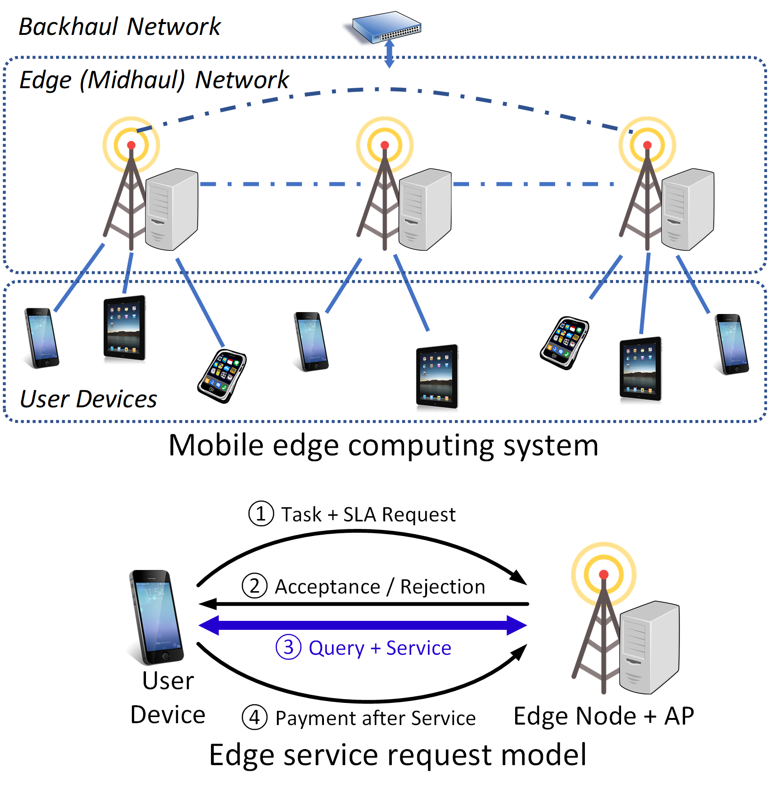

Robust SLAs for Mobile Edge Computing Applications
This project is supported by NSF Award #2007391 and #2007469 (2020/10/01-2023/09/30):
Collaborative Research: CNS Core: Small: Robust Resource Planning and Orchestration to Satisfy End-to-End SLA Requirements in Mobile Edge Networks
|
Project Description
| |
|  | Mobile edge computing has emerged to address the long latency, low throughput, and unpredictability of cloud computing for serving modern mobile applications. Nevertheless, the lack of end-to-end performance guarantee in the form of service-level agreements (SLAs) can lead to performance degradation of critical applications during unexpected system dynamics, rendering these applications incompetent or unsafe to use. This project seeks to develop mathematical and systematic tools for edge providers to quantify and control, the risk associated with providing end-to-end SLAs for mobile applications. By designing multi-dimensional resource planning and orchestration algorithms that bound or minimize the risk associated with edge SLAs, this project aims to enable and enhance life-changing edge applications such as autonomous driving and mobile vision, promote investment and expedite development in mobile edge computing, and broaden awareness of risk management from a system perspective. |
|
Personnel
| |
Dr. Guoliang Xue PI@ASU |
 Dr. Ruozhou Yu PI@NCSU |
|
Publications
| |
|
|
|
Datasets and Artifacts
| |
| - YOLO object detection microservice CPU & memory profiling (regression) [Fig] [Raw data and code will be available soon] | |
| - Social network (DeathStarBench) application: network traffic profiling data [Dataset] | |